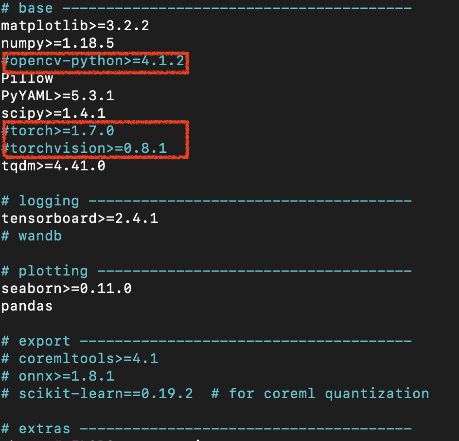
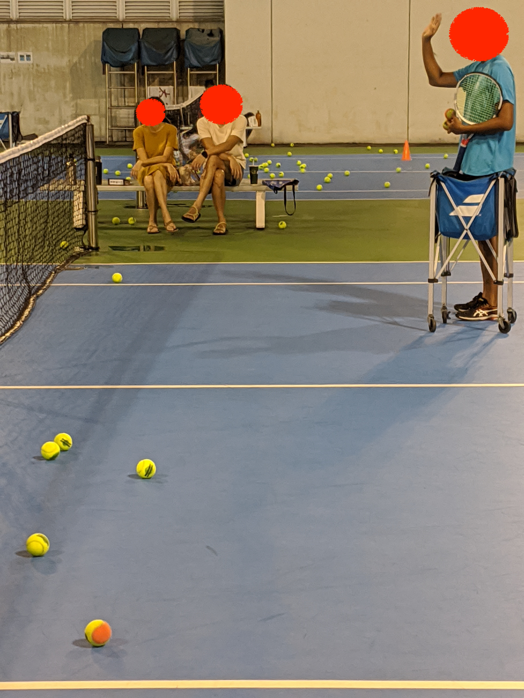
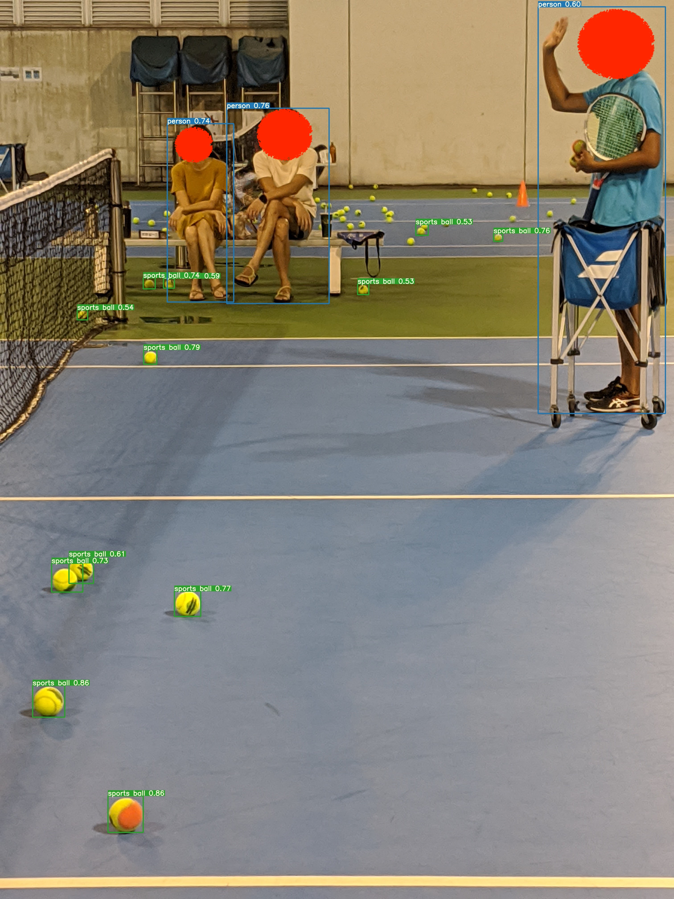

在 NVIDIA Jetson Nano 上跑 Yolov5 上踩的雷!!!
從 N 年前開始學網球的時候，就覺得應該要有一類似掃地機器人的工具，幫忙撿球。最近比較有時候，就想來試試。
其實圖像辨識的 Model 很多，研究了一下，Yolo演算法把圖片分割的方式非常特別，所以很像試試看。但在 Jetson Nano 上跑起 Yolov5 可是整整花了我兩個晚上啊 !!! 這篇文章來說說我踩過的雷。
以下五大點是踩雷結論:
-
用官方的 docker 跑起來 nvcr.io/nvidia/l4t-ml:r32.5.0-py3
-
git clone https://github.com/ultralytics/yolov5 但要切到對應上面 docker 環境的commit 91547edec1a33121b3607e8c946e051514182b4f
-
Yolov5 裡的 requirements.txt 有三個套件要 mark 掉，因為 docker 已經幫你建好符合 Jetson Nano 的 opencv-python, torch, torchvision

第一個錯誤“can’t get attribute ‘sppf’ “是 Yolov5 已經進化到多了 SPPF 這個function，我們用的 commit 當初沒有，所以我們要手動把這個function 加上。
這個問題我修改了兩個檔案
1\. utils/google\_utils.py
2\. models/common.py
# yolov5/utils/google_utils.py
- response = requests.get(f'https://api.github.com/repos/{repo}/releases/latest').json()
+ response = requests.get(f'https://api.github.com/repos/{repo}/releases/tag/v5.0').json()
# yolov5/models/common.py
# copy SPPF fubctuon for following link.
# https://github.com/ultralytics/yolov5/blob/v6.0/models/common.py
class SPPF(nn.Module):
# Spatial Pyramid Pooling - Fast (SPPF) layer for YOLOv5 by Glenn Jocher
def __init__(self, c1, c2, k=5): # equivalent to SPP(k=(5, 9, 13))
super().__init__()
c_ = c1 // 2 # hidden channels
self.cv1 = Conv(c1, c_, 1, 1)
self.cv2 = Conv(c_ * 4, c2, 1, 1)
self.m = nn.MaxPool2d(kernel_size=k, stride=1, padding=k // 2)
def forward(self, x):
x = self.cv1(x)
with warnings.catch_warnings():
warnings.simplefilter('ignore') # suppress torch 1.9.0 max_pool2d() warning
y1 = self.m(x)
y2 = self.m(y1)
return self.cv2(torch.cat([x, y1, y2, self.m(y2)], 1))
第二個錯誤是，“the size of tensor a(80) must match the size of tensor b (56) at non-singleton dimension 3”，原因是 Yolov5 幫我們預下載的 “yolov5s.pt” model 是最新的，不是這個 tag v5.0 支援的 model。所以我們要先把自動下載的 “yolov5s.pt” 刪掉後，再手動下載
```plaintext
wget https://github.com/ultralytics/yolov5/releases/download/v5.0/yolov5s.pt
```
經過以上的踩雷後，Jetson nano 真的可以跑 Yolov5 了!!!! 附上原圖(紅色馬賽客是後來補上的，跑 YoloV5 的時候並沒有馬賽客)，跟跑出來的結果，成果相當的好啊!! 至少第一個球場上的網球都有被標到，看來我的撿球機器人已經邁向了 3%了!!

